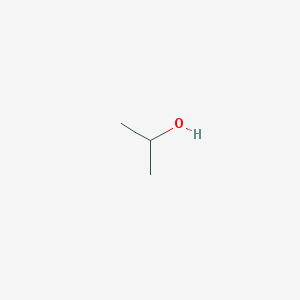
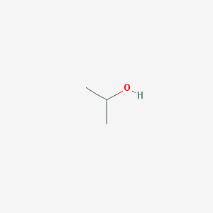
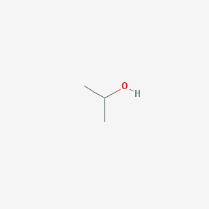

In 1920, Standard Oil first produced isopropyl alcohol by hydrating propene. Its main use at the time was not rubbing alcohol but for oxidation to acetone, first used in World War One for the preparation of smokeless propellant, cordite
In 1990, 45 thousand metric tons of isopropyl alcohol was used in the United States. Most isopropyl alcohols are used as solvents for coatings or for industrial processes. In that year, 5.4 thousand metric tons were consumed for household and personal care products. Isopropyl alcohol is particularly popular for pharmaceutical applications,presumably due to the low toxicity of any residue. Some isopropyl alcohols are used as chemical intermediates. Isopropyl alcohol can be converted to acetone, but the cumene process is more significant. It is also used as a gasoline additive
In 1994, 1.5 million tons of isopropyl alcohol was produced in the United States, Europe, and Japan. It is mainly produced by combining water and propene in hydration reactions or by hydrogenation of acetone. There are two routes to the hydration process and both processes require isopropyl alcohol to be separated from water and other byproducts by distillation. Isopropyl alcohol and water form a simple azeotrope and distillation give a material that is 87.9% by weight of isopropyl alcohol and 12.1% by weight of water. Pure isopropyl alcohol (anhydrous) is prepared by azeotropic distillation of wet isopropyl alcohol using diisopropyl ether or cyclohexane as an azeotroping agent.
